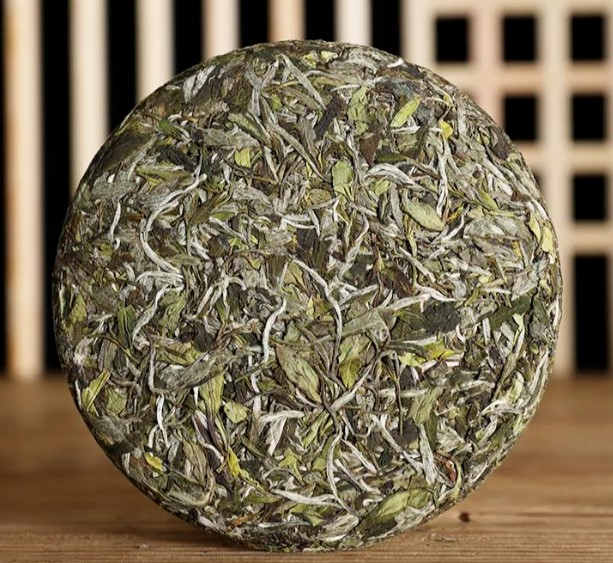
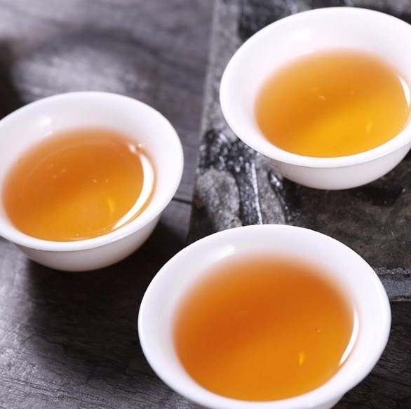
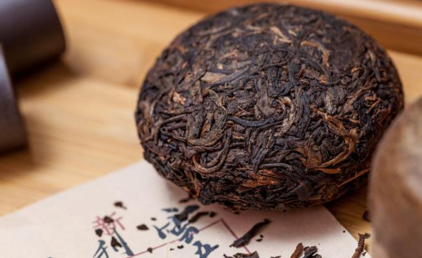
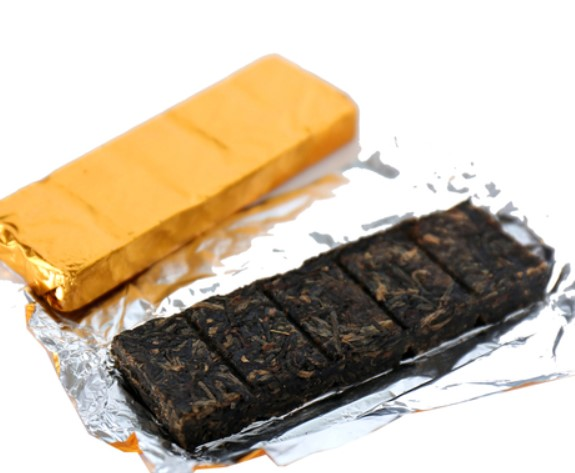
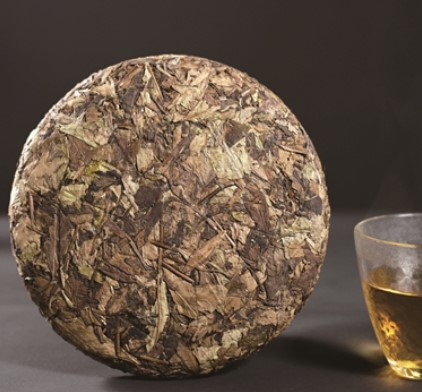
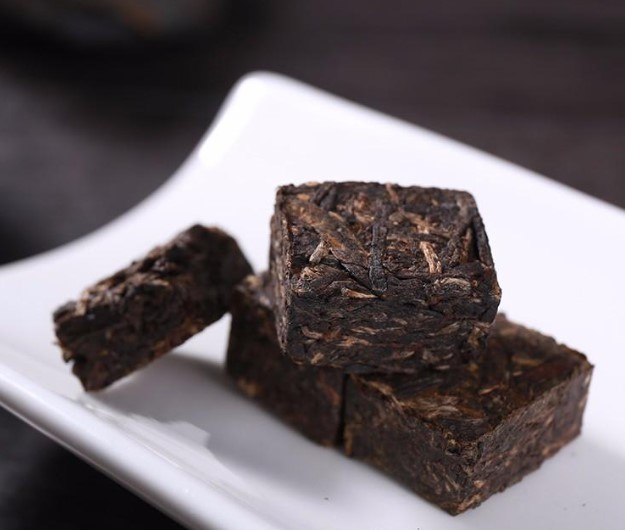
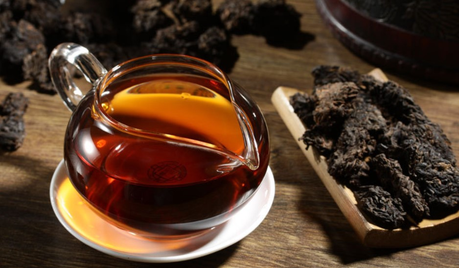
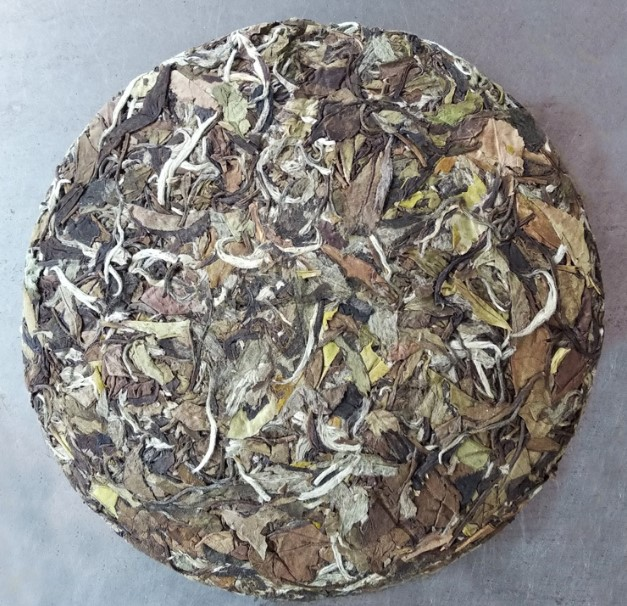

紧压茶
紧压茶，是以黑毛茶、老青茶、做庄茶及其它适合制毛茶为原料，经过渥堆、蒸、压等典型工艺过程加工而成的砖形或其它形状的茶叶。紧压茶的多数品种比较粗老，干茶色泽黑褐，汤色澄黄或澄红。在少数民族地区非常流行。紧压茶有防潮性能好，便于运输和储藏，茶味醇厚，适合减肥等特点。
茶叶简介
砖状或块状，为了防止途中变质，一般紧压茶都是用红茶或黑茶制作。紧压茶一般都是销往蒙藏地区，这些地区牧民多肉食，日常需大量消耗茶，但是居无定所，因此青睐容易携带的紧压茶。
茶叶来源
紧压茶喝时需用水煮，时间较长，因此茶汤中鞣酸含量高，非常有利消化，但也促使人产生饥饿感，所以喝时一般要加入有营养的物质。蒙古人习惯加奶，叫奶茶，藏族人习惯加酥油，为酥油茶。
紧压茶，根据堆积、做色方式不同，分为"湿坯推积做色"、"干坯堆积做色"、"成茶堆积做色"等亚类。我国紧压茶产区比较集中，主要有湖南、湖北、四川、云南、贵州等省。其中获砖、黑砖、花砖茶主产于湖南；青花砖主产于湖北；康砖、金尖主产于四川、贵州；普洱茶之紧茶主要产于云南；沱茶主要产于云南、重庆。
具体分类
饼茶
饼茶：是经蒸压成型、外形呈扁平“饼状”的茶叶。常以七块饼茶为限，用笋叶将七个茶饼包装为一筒，故又名“七子饼茶”。传统的“七子饼茶”每块净重357克，饼的直径21厘米，中心厚度2厘米，边缘厚1厘米：有“生饼”和“熟饼”两种。近几年以来，顺应市场需求，以“饼”为形制的各种饼茶大量出现。常见200克、400克、500克饼，也有更大更小的，形如“钱币”状、圆而中孔的“铜钱茶”等。其凡列，不一而足。
方包茶
方包茶拉产于四川灌县，是西路边茶的一个主要花色品种，因将原料茶筑压在方形篾包方正，四角稍紧。每包重35公斤，长方形，大小规格为66X50X32厘米，含梗量60%。方苞茶的品质特点是色泽黄褐，稍带烟焦气，滋味醇和，滋味醇和，汤色红黄，叶底黄褐。
方包茶主销四川阿坝藏族自治州及甘孜藏族自治州等地。以松潘为中心，并转达销甘肃、青海、西藏毗邻地区。
茯砖茶
茯砖茶约有1860年前后问世，茯砖早期称“湖茶”，因在伏天加工，故又称“伏茶”，因原料送到泾阳筑制，又称“泾阳砖”。现在茯砖茶集中在湖南益阳和临湘两个茶厂加工压制，年产量约2万砘，产品名称改为湖南益阳茯砖。
茯砖茶外形为长方砖形，规格为35X18.5X5厘米。特制茯砖砖面色泽黑褐，内质香气纯正，滋味醇厚，汤色红黄明亮，叶底黑褐尚匀。普通茯砖砖面色泽黄褐，内质香气纯正，滋味醇和尚浓，汤色红黄尚明，叶底黑褐粗老。每片砖净重均为2公斤。茯压茶在泡饮时，要求汤红不浊，香清不粗，味厚不涩，口劲强，耐冲泡。特别要求砖内金黄色霉菌（俗称“金花”）颗粒大，干嗅有黄花清香。
固形茶
固形茶是一种细条形的再加工茶，用茶叶初，精制自然产生的细片末茶，研磨成茶粉，然后加入符合食品要求的粘合剂，调和压制成细条的固形条。形状似短碎的面条和粉丝，断面有圆形和三联单角形两种。一般长度1~2厘米，直径0.1~0.15厘米，用沸水冲泡后茶条不散，茶叶中水可溶物能很快溶出。
这种茶的生产，对解决低档茶叶原料的再生利用是有益的，也是茶叶饮料的一种新品种。主要品种就有绿茶、红茶、花茶固形茶，主销山东等地。
黑砖茶
黑砖茶原产于湖南安化白沙溪，1939年前后开始生产。因砖面压有“湖面省砖茶厂压制'8个字，又称为的“八字砖”。因砖面用凸字字膜，兰州市场称黑砖为“鼓字老牌安化黑砖”。现在年产量约5000吨，主销甘肃、宁夏、青海、新疆等省区，以兰州为集散地。
黑砖茶的外形为长方砖形，规格为35X18X3.5厘米。砖面端正，四角平整，模纹（商标字样）清晰。砖面色泽黑褐+，内质香气纯正，滋味浓厚微涩，汤色红黄微暗，叶底老嫩匀，每片砖净重2公斤。
花砖茶
“花砖”历史上叫“花卷”，因一卷茶净重合老秤1000两，故又称“千两茶”。
规格为35X18X3.5厘米。正面边有花纹，砖面色泽黑褐，内质香
紧压茶
气纯正，滋味纯正，滋味浓厚微涩，汤色红黄，叶底老嫩匀称，每片花砖净重2公斤。 “花砖”的名称由来，一是由卷形改砖形，二是砖面四边有花纹，以示与其它砖茶的区别，故名“花砖”。
花砖茶销区以太原为中心，并转达销晋东、北及内蒙古自治区等地。
圆茶
圆茶（七子饼茶）是一和圆周饼形的蒸压黑茶包装时每装7块，因此又称“七子饼茶”，每块重357克，规格为直径20厘米。这和圆饼茶比小饼茶大，因此亦称“大饼茶”。
圆茶原产云南省西双版纳地区，以易武（今思茅县东南）为最多。现主要是由云南省勐海县生产，昆明市、景东县、下关（今大理布）等也有压制。
圆茶外形圆整，洒面均匀显毫，色泽黑褐油润，在特殊的陈香味，浓醇可口。圆茶除内销云南、广东等省外、历史上行销越南、老挝、缅甸、泰国、印度尼西亚、马来西亚等国。现港、澳地区也有一定销量。
竹筒香茶
竹筒香茶是云南省特有的历史名茶，因茶叶具有竹筒香味而得名；又加其原料细嫩，被雅称为“姑娘茶”，拉枯族语叫“瓦结那”。
竹筒香茶产于云南西双版纳州勐海县、文山州的广南县底圩村、腾冲县坝外等地，已有200多年的历史。
竹筒茶属绿茶紧压茶类，其品质特点是，外形呈圆柱菜，直径3~8厘米不等，长8~20厘米不等，不柱体的到面光的滑，香气馥郁，具有竹香、糯米香、茶香三香一体的特殊风味，滋味鲜爽回甘，汤色黄绿清澈，叶底呈肥嫩黄亮。
饮用方法
紧压茶的饮用，至今仍沿用我国古老的传统饮茶方法。据三国魏张揖《广雅》记载：“荆巴间采茶作饼，成以米膏出之。”当时饼茶的饮用方法是：“若饮先炙令色赤，捣末置瓷器中，以汤浇覆之。”另外，还要“用葱姜芼之”，以调和茶味。到了唐代，据陆羽《茶经》记述，虽然当时茶叶“饮有粗茶、散茶、末茶、饼茶者” 之分。但饮用时粗茶要先击细，散茶要先干煎，末茶要先炙焙，而饼茶则需先捣碎，然后入瓶中，注入开水烹煮，方可饮用。至于调料，比三国时更多，还有用红枣、薄荷的。只是到了宋代以后，我国大部分地区，饼茶、团茶等紧压茶已为散茶所替代，从此茶叶用法亦由冲泡替代烹煮。人们为追求茶的“本味”，“清饮”之风也逐渐代替了原先的“调饮”之习，使饮茶方法发生了一个大的转变。
但是，一千多年来，这种古老的饮茶方法，仍受到我国边疆地区兄弟民族的喜爱。这种传统的饮茶习俗，仍为我国边疆地区兄弟民族所保留，只不过是现今的紧压茶加工工艺以及饮用方法有所改进与创新罢了。
目前，我国生产的紧压茶大多为砖茶。由于砖茶与散茶不同，甚为紧实，所以，用开水冲泡难以浸出茶汁，饮用时必须先将砖茶捣碎，在铁锅或铝壶内烹煮才可。而且，有时在烹煮过程中，还要不断搅拌，以使茶汁充分浸泡出。另外，饮紧压茶的兄弟民族，主要集中在西藏、新疆、内蒙古一带，属高原地带，气压低，烧水不到 100℃就沸腾，如果用冲泡法泡砖茶，茶汁更不易浸出，这也是紧压茶为什么不能用冲泡法，而需用烹煮法才能饮用的原因之一。只是由于地区不同、民族不同、风俗习惯不同，才使紧压茶的调制方法有所不同罢了。
藏族同胞习惯于将紧压茶调制成酥油茶饮用，惟对紧压茶的爱好有所不同，拉萨一带爱喝四川的康砖和云南的紧压茶，昌都地区则爱喝四川的金尖。他们调制酥油茶时，先将砖茶捣碎，放在锅内煮沸，滤出茶汁，倒入先放有酥油和食盐的打茶桶内，再用一个特制的搅拌工具插入茶桶，不断搅拌，使茶汁、酥油、食盐混合成白色浆汁，然后倾入茶碗，就可饮用。牧民在外出放牧时，也有的把砖茶捣碎放入一只小土陶罐内，加入清水、食油和奶子煮沸，再用竹棒不断搅拌，使之相互混合，然后倒出饮用。这种茶，藏族称其为奶茶。在平时，亦有一些藏族家庭，采用比较简单的饮用方法，只是将砖茶捣碎，放上清水，加些盐巴，而后煮沸10多分钟，再慢慢搅拌几下，待茶汁充分浸出后，即可倒入茶碗饮用。这种茶，藏族同胞称其为盐茶。不过，逢年过节，藏民一定要调制酥油茶，美美地喝上一顿。
住在内蒙古的蒙古族兄弟，特别是那里的牧民，最爱喝紧压茶，不过，锡林格勒盟和伊克昭盟的牧民大多爱喝青砖茶，乌兰察布盟、巴颜淖尔盟的牧民以及呼和浩特一带的回民，最爱喝黑砖茶。虽然内蒙古各地喝紧压茶的方法略有不同，但大多数牧民共同的饮用方法是，先将砖茶劈开砸碎，然后抓一把放入铝茶壶内，然后加上清水煮开，然后加入奶子和食盐，经少许搅拌，即成为咸奶茶，供一日早、中、晚三次饮用。 新疆各兄弟民族，虽然大都喜欢喝紧压茶，但对紧压茶要求不一，以致饮用方法也不一样。维吾尔族主要饮用的是茯砖茶。不过，南疆地区的做法是将茯砖茶打碎，投入长颈铜茶壶内，再加入少许研细的桂皮、丁香、胡椒等作料调味，尔后加上适量清水煮沸，调成香茶，与一日三顿饭共饮；北疆地区的做法是将茯砖茶打碎，投入铁锅，加清水适量，煮沸后再加入鲜奶或奶疙瘩以及少量食盐，调制成奶子茶饮用。哈萨克族、柯尔克孜族、乌孜别克族等同胞习惯于喝米砖茶，其做法是先将米砖茶打碎，投入壶中，加入清水，在火炉上烹煮成浓茶汁，然后将浓茶汁注入茶碗，加上少许食盐和适量奶皮子，最后冲上刚烧沸的开水，使之成为咸香可口的奶茶，即可饮用。有时，他们也喝不加食盐和奶皮子而放方糖的甜茶。回族兄弟主要饮用茯砖茶，也有喜欢喝黑砖茶的。方法是将砖茶捣碎成小块，放入壶中，加入清水，煮沸3—5分钟，即可饮用。这种茶，回族兄弟称其为喝清茶。不过，也有喜欢喝奶茶的。如
果是喝奶茶，那么，只要将上述已煮开的清茶，注入已煮好的牛奶中，再加些食盐后就成了。
紧压茶的饮用方法，与其他众多的饮用方法相比，至少有三点不同：一是饮用时先要将紧压成块的茶叶打碎；二是不宜冲泡，而要用烹煮的方法，才能使茶汁浸出；三是烹煮时，大多加有作料，采用调饮方式喝茶。
茶叶历史
紧压茶加工中的蒸压方法与我国古代蒸青饼茶的做法相似。紧压茶生 产历史悠久，大约于11世纪前后，四川的茶商即将绿毛茶蒸压成饼，运销西北等地。到十九世纪末期，湖南的黑砖茶、湖北的青砖茶相继问世。紧压茶独具的品质特性是，除了它具有较强的消食却腻，适应各地少数民族特殊的烹饮方法之外，是它还具有较强的防潮性能，便于运输和贮藏。由于过去产茶区大多交通不便，运输茶叶是靠肩挑、马驮，在长途运输中极易吸收水分，而紧压茶类经过压制后，比较紧密结实，增强了防潮性能，便于运输和贮藏。而有些紧制茶在比较长时间的贮存中，由于水分和湿度的作用，还能增进茶味的醇厚。所以直到如今，以各种茶类加工制作的压缩茶，不仅在国内是兄弟民族日常生活的必需品，需要量多，而且在国际市场上也有一定的销售量。
明代以前，我国饮用的团饼茶就是茶树鲜叶经蒸青、磨碎，用模子压制成型烘干而成的紧压茶。现代的紧压茶以制成的绿茶、红茶或黑茶的毛茶为原料，经蒸压成圆饼形、正方形、砖块形、圆柱形等形状，其中以用黑茶制成的紧压茶为大宗。
补遗
在蒸青饼茶的生产中，为了改善苦味难除、香味不正的缺点，逐渐采取蒸后不揉不压，直接烘干的做法，将蒸青团茶改造为蒸青散茶，保持茶的香味。这种改革出现在宋代，《宋史·食货志》载：“茶有两类，曰片茶，曰散茶”，片茶即饼茶。元代王桢《农书》，对当时制蒸青散茶工序有详细记载“采讫，一甑微蒸，生熟得所。蒸已，用筐箔薄摊，乘湿揉之，入焙，匀布火，烘令干，勿使焦”。
由宋至元，饼茶和散茶同时并存。到了明代初期，由于明太祖朱元璋于 1391年下诏，废龙团贡茶而改贡散茶，使得蒸青散茶在明朝前期大为流行。
蒸青制茶。即将茶的鲜叶蒸后捣碎，制饼穿孔，贯串烘干。蒸青饼茶工艺在中唐已经完善，陆羽《茶经·三之造》记述：“晴，采之。蒸之，捣之，拍之，焙之，穿之，封之，茶之干矣。”
龙凤团茶的制造工艺，据宋代赵汝励《北苑别录》记述，有六道工序：蒸茶、榨茶、研茶、造茶、过黄、烘茶。茶芽采回后，先浸泡水中，挑选匀整芽叶进行蒸青，蒸后冷水清洗，然后小榨去水，大榨去茶汁，去汁后置瓦盆内兑水研细，再入龙凤模压饼、烘干。
相关说明
云南紧压茶
沱茶的形状呈碗臼形，香气陈香浓郁，汤色深红，滋味醇厚。紧茶 呈砖形或心脏形，色泽深绿带褐，香气纯正，茶汤橙红，滋味醇和。饼茶、七子饼茶形状为圆饼形，色泽深绿带褐，香气纯正，茶汤橙红，滋味醇厚普洱紧茶形状呈砖形或心脏形，香气陈香，茶汤深红，滋味醇和。
湖南紧压茶
湘尖茶呈圆柱形篓包状，重量达50千克、45千克、40千克。按原料级别分为湘尖1号、2号、3号，又叫天尖、贡尖和生尖。湘尖1号香气清纯带松烟香，湘尖2号，香气纯正稍带松烟香，湘尖3号香气纯正稍淡，稍带焦烟香。 茯砖茶外形呈砖块状，香气纯正，带金花香，汤色橙黄，滋味特茯醇和。花砖茶外形呈长方形砖块状，色泽黑褐润，香气纯正或带松烟香，茶汤橙黄，滋味醇和。黑砖茶外形呈长方形砖块状，色泽黑褐，香气纯正，茶汤橙黄稍深或橙黄稍暗，滋味纯和略涩。
四川紧压茶
康砖茶外形呈圆角长方形，净重500克。香气纯正，茶汤红黄，滋味尚浓醇。 金尖茶外形呈圆角长方形，净重为2．5千克。色泽棕褐，香气纯正，茶汤黄红尚明，滋味纯和。 方包茶外形为长方形篾包状，净重35千克。色泽黄褐，香气稍带烟焦气，汤色黄红，滋味纯和。 茯砖茶外形呈长方形，内有金黄色“金花”，香气纯正稍带有金花香，茶汤橙黄，滋味纯和略涩。
湖北、广西紧压茶
湖北紧压茶包括青砖茶和米砖茶。广西紧压茶主要是广西篓装六堡茶。 青砖茶外形呈长方形砖块状，色泽青褐；香气纯正，茶汤橙红，滋味醇和。 特级米砖茶香气纯正，茶汤深红，滋味浓醇，叶底红匀。 广西六堡茶外形为圆柱形篓包状，每篓净重达55千克、50千克、45千克、40千克、37.5千克等。香气陈香浓郁，似槟榔香，茶汤红浓深厚，滋味淳滑。